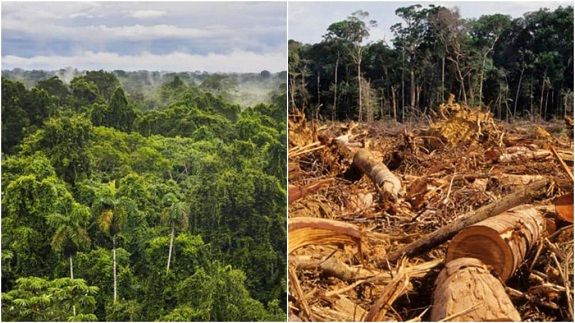

PRECAUCIONES:
La contaminación en aire, agua y suelos, además de la extinción de especies, son algunas de las principales consecuencias que dejan los incendios. Según los expertos, se necesitarán años de trabajo para “recuperar una parte del bosque que se quemó.
• Conservación de paisajes forestales y su diversidad biológica. • Mantener un manejo forestal uniforme sin agotar los recursos forestales. • Enseñando a la población las habilidades para cuidar el bosque. • Fortalecer a nivel estatal el control sobre la conservación y el uso de los recursos naturales. • Creación de sistemas de contabilidad y monitoreo de fondos forestales. • Mejora de la legislación forestal.
Medidas adicionales para resolver los problemas de deforestación
Para reducir el daño de la tala, es necesario:
• Aumentar las áreas de plantación para nuevos bosques. • mpliar las existentes y crear nuevas áreas protegidas, reservas forestales. • Introducir medidas efectivas para prevenir incendios forestales. • Llevar a cabo medidas, incluidas medidas preventivas, para combatir enfermedades y plagas. • Para realizar un sembradío de especies arbóreas resistentes al estrés ambiental. • Proteger los bosques de las actividades de las empresas dedicadas a la minería. • Para llevar a cabo la lucha contra los cazadores furtivos. • Use técnicas de registro efectivas y menos dañinas. Minimizar el desperdicio de madera, desarrolle métodos para su uso. • Introducir métodos de reciclaje de madera.

Lo que pueden hacer las personas para salvar los bosques:
• Utilizar productos de papel de forma racional y económica. • Comprar productos procesados, incluido el papel (con marcado de reciclado). • Reverdeciendo el área cerca del hogar. • Reemplazar los árboles cortados para leña con nuevas plantas. • Llamar la atención del público sobre el tema de la destrucción de los bosques.